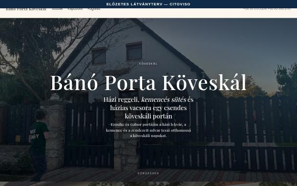

Valós adat: Bánó Porta Köveskál, a mai legutóbbi mockja (tilted-gallery sablon). A tulaj kérése: „a mockoknál lehessen manuálisan újraírni a szöveget”. Ma a lead-lapon csak AI-újraírás van („Szöveg újragenerálása” utasítással) — kézzel egy betűt sem lehet javítani.
A — Mezős űrlap a kártyán. A „Részletek” alatt minden szöveg-mező egy listában: a sablonon nem látszó mezők is (jelölve). Pontos, mindenre kiterjed; a kurátor viszont nem a lapon látja, mit ír át.
B — Helyben, az előnézeten. A mock-előnézet tetején „Szöveg szerkesztése” kapcsoló; a szövegre kattintva ott helyben írja át. Azonnal látja a hatást (tördelés, hossz), de csak azt írhatja át, ami az adott sablonon látszik.
Mindkettőben ugyanaz a viselkedés: a változott mező „kézzel átírva” jelölést kap, mezőnként és egyben is visszaállítható az eredeti AI-szövegre, a mentés után az őrök (tényhűség, marketing, vendég-kritikus) újra lefutnak. A kapu-eredmény a mockban szimulált (szólista + számjegy) — próbálja ki: írja be valahová, hogy „medence”.

Írja át, ami nem tetszik; a többi marad. A mentés csak a szöveget cseréli — kinézet, fotók, elrendezés változatlan. Amit kézzel ír, azért Ön felel: a tényhűség-kapu arra is lefut.
Az alatta lévő „Szöveg újragenerálása” (AI) a kézzel átírt mezőket nem írja felül — azok rögzítve maradnak, az AI csak a többit írja újra.
(a mai panel, változatlan)
A kártya „szöveg szerkesztése ▸” linkje a kurátornak szerkeszthető előnézetet nyit (a lead a sáv nélküli, sima oldalt kapja — a /mock/ link változatlan). Kapcsolja be a „Szöveg szerkesztése” gombot a felső sávban, majd kattintson egy szaggatott keretes szövegre. Enter = kész, Esc = elveti; a főcímben kijelöléssel + „Dőlt” gombbal állítható a kiemelés.